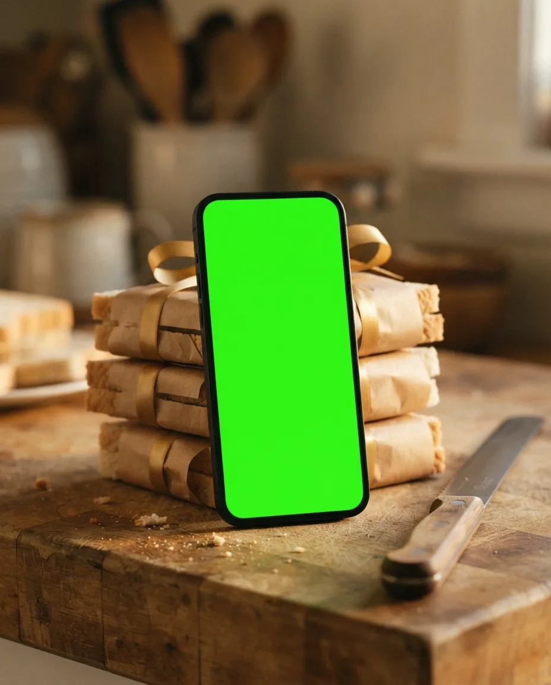
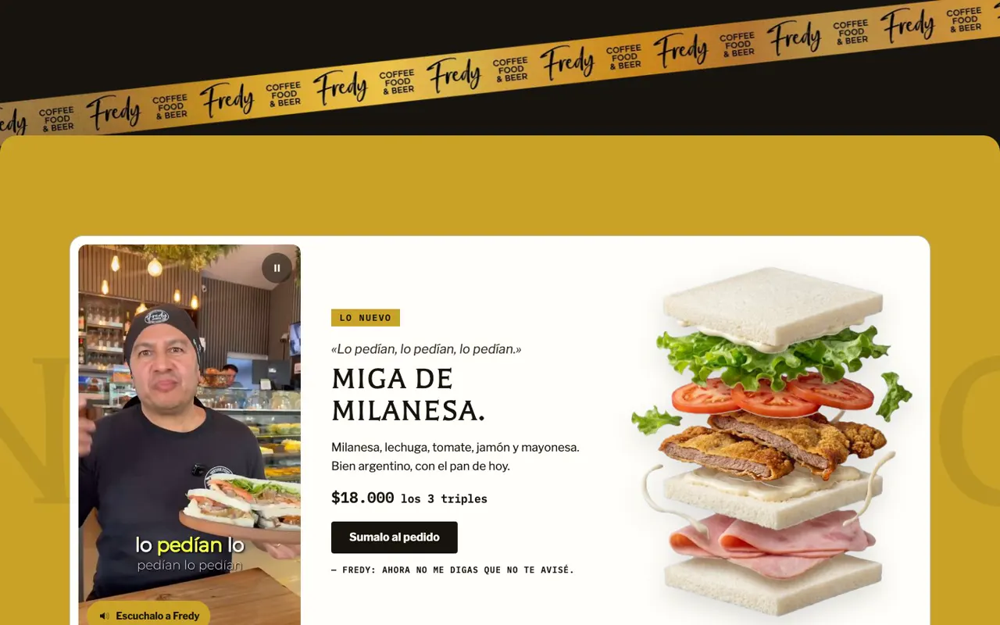
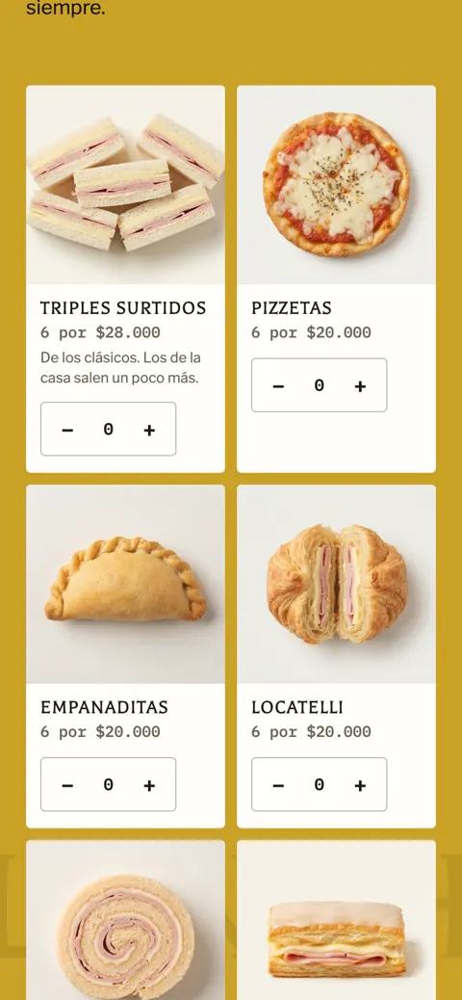
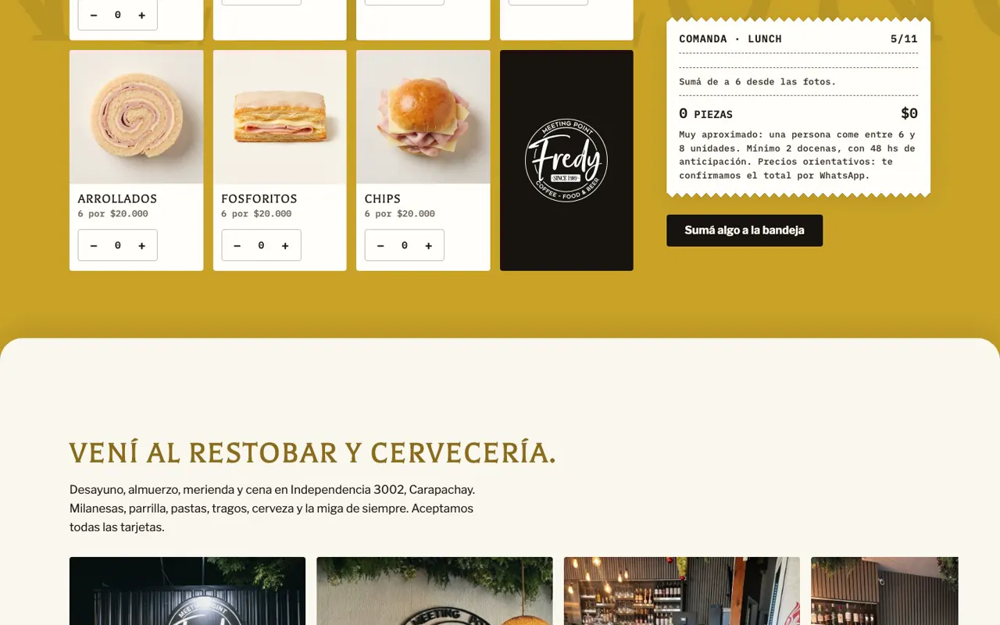
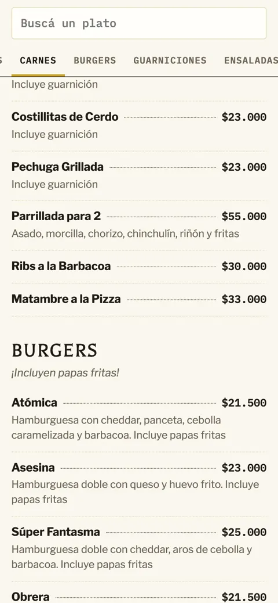
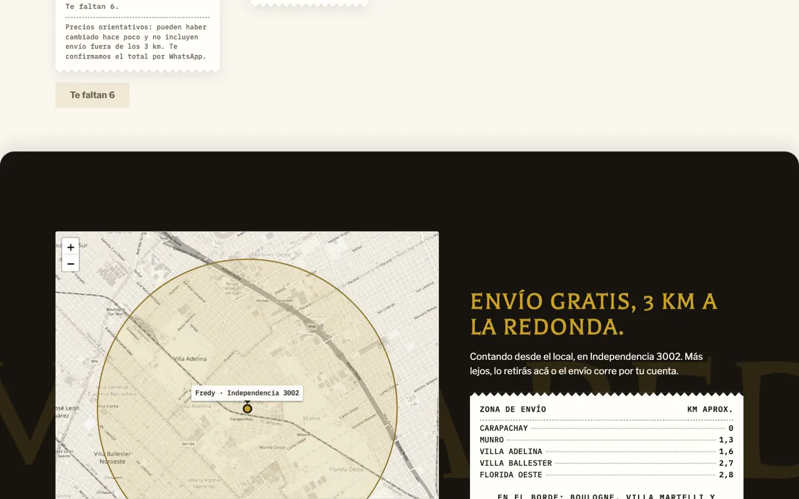

- Cliente · en producción
- Gastronomía
- 2026
Fredy restobar.
Sándwiches de miga en zona norte. Un sitio que no toma el pedido: lo manda rápido al canal que el cliente ya eligió, y arma el lunch para la oficina solo.
Ver el sitio
Lo que vi
Una confitería con 35 años en el barrio y una web que era una plantilla de WordPress: Google tenía indexadas notas de ejemplo sobre sushi y cócteles. Los pedidos ya entraban por WhatsApp y PedidosYa, y el lunch para oficinas se cotizaba a mano, mensaje por mensaje.
La idea
«La mayoría arma con pan de dos días. Acá llega a la mañana y se fetea en el momento.»
Esa frase la dice el dueño en un reel, y manda sobre todo el sitio. Lo demás se corre de en medio: el que quiere retirar va a WhatsApp, el que quiere envío va a PedidosYa, y el lunch se arma en una comanda que suma piezas, precio y para cuántas personas alcanza.
Por dentro





Cómo usé IA
| Herramienta | Para qué | Lo que corregí a mano |
|---|---|---|
| Veo | El video de la portada: la pila de sándwiches en un loop de 7 segundos, sin salto, de 0,5 MB. | Elegí entre varias tomas y armé el loop de ida y vuelta para que no se note el corte. |
| Gemini | Once ediciones de fotos reales del local y de los productos. | Revisé cada cartel con zoom: en uno había cambiado «1989» por «1985». |
| Gemini + código | El sándwich de milanesa desarmado, partido en 7 capas que se juntan con el scroll. | El corte de las capas lo hace un script, no el modelo. |
| Claude Code | El build: la carta sale de un JSON, con sus datos estructurados para Google. | Cada decisión de diseño se aprobó antes, de a una. |
Resultado · Lighthouse en celular, home
- Rendimiento
- 98
- Accesibilidad
- 100
- Buenas prácticas
- 100
- SEO
- 100
En línea desde el 2 de octubre de 2026 en fredyrestobar.com.ar. La carta da 100 en las cuatro. Dominio, DNS, Search Console y medición de cada botón, también a cargo mío.